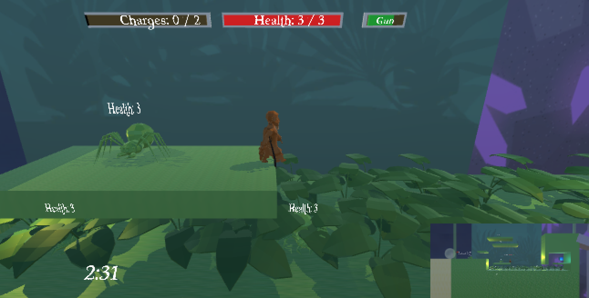
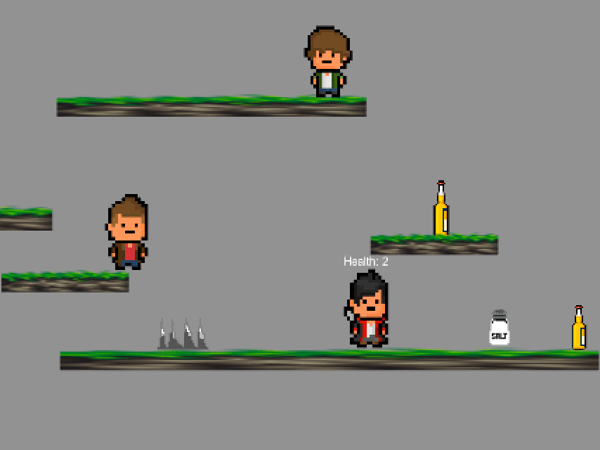

SimpleBot (work in progress!)
A simple IRC bot made using Python
Chatrooms can get a little quiet sometime.
Spice it up with SimpleBot!
SimpleBot is still a work in progress.
Here are some features I’m hoping to add:
- Basic moderation (optional)
- Trivia
- Chat logging
- Trivia
- Chat logging
Picaroon
A 2.5D time-travel pirate game made using C# and Unity
Imagine: you are a pirate and you find yourself
stranded on a deserted island. You can’t seem to remember how you ended up
there, or where the rest of your crew went. As you explore the island,
you encounter some strange monsters, and some odd flashes back in time...
Team Members: Hazel P., Cameron C., Sage M., Lena R.

Supernatural
A 2D platformer originally made using
Java and Slick2D, remade with C# and Unity
Can't get enough of the hit-television series Supernatural?
Fear not - you can now play as an 8-bit Wincester brother and battle evil demons
with your trusty salt gun.
Team Members: Megan R., Sakke O.
